1. 网络架构¶
1.1 U-Net¶
多尺度信息交换网络
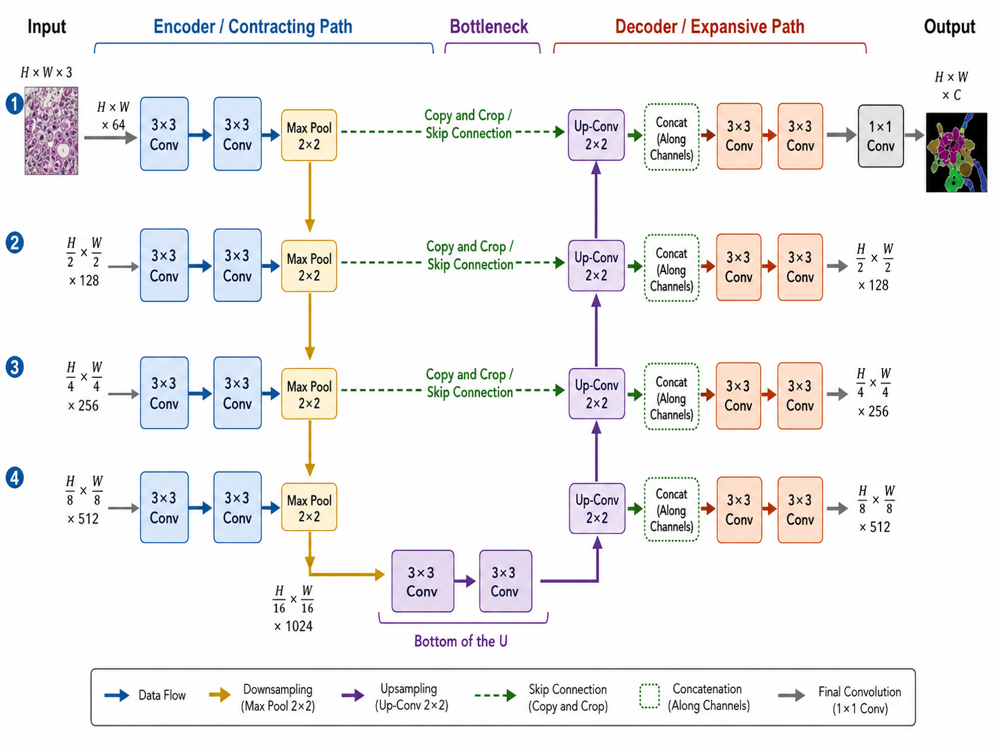
Encoder进行下采样，理解整体内容。Decoder上采样，恢复空间结构
下采样
对输入进行卷积，池化，缩小空间尺寸，增加通道数
- 获得更强的语义理解
- 扩大感受野
- 但空间细节丢失
上采样
对特征图进行上采样，恢复空间尺寸，生成与输入尺寸接近的输出
跳跃连接
在Decoder中，将上采样后的特征图与下采样前特征图进行拼接，以保留空间信息。
Concat(Along Channels) :
跳跃连接后继续卷积，调整通道数
1.2 ResNet¶
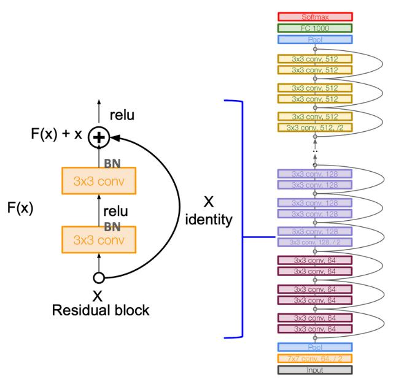
残差块：将输入加到输出上，解决梯度消失问题
1.3 Transformer¶
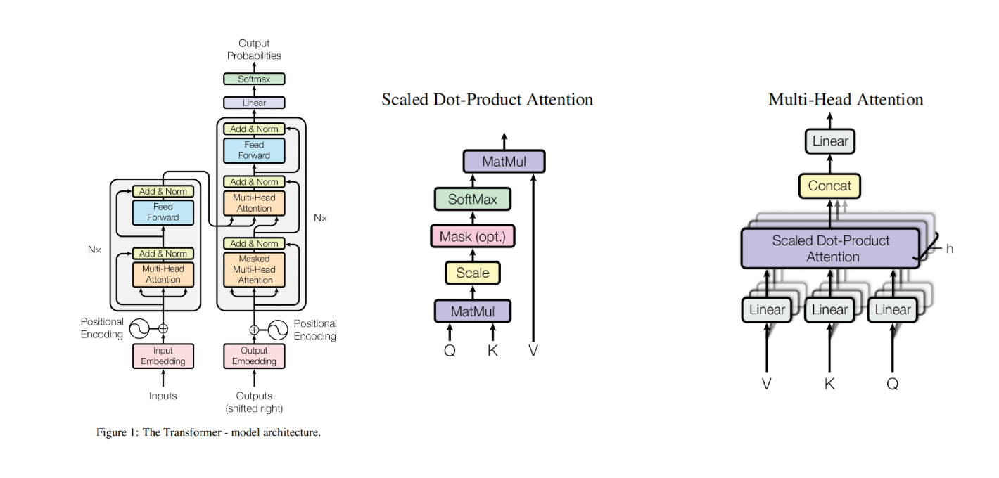
1.3.1 词嵌入与位置编码¶
词嵌入是准备一个隐藏表示，或者说Transformer的内部向量表示。
不同输入的输入嵌入获取方式不同： - 文本输入：\(\mathbf{z}_i = E[token_i]\) ,在词嵌入表中使用词序号查表。 - 图像输入：\(\mathbf{z}_i = \mathbf{z}_i W + b\) , 对图像进行线性变换，得到图像的向量表示。 - 音频输入：\(\mathbf{z}_i = f_{\text{audio}(\mathbf{x}_i)}\) , 频谱分帧，线性变化，卷积映射。
位置编码和词嵌入相加而非拼接是工程设计
- 每一个频率占两个维度
1.3.2 注意力机制¶
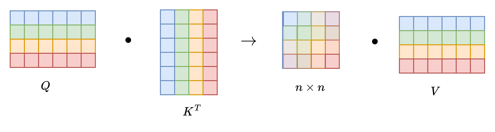
-
\(V\) : n个词嵌入线性变换得到
\[ X = \begin{bmatrix} \mathbf{z}_1 \\ \mathbf{z}_2 \\ \vdots \\ \mathbf{z}_n \end{bmatrix} \in \mathbb{R}^{n\times d_{model}} \]\[ V = X \cdot W_V = \begin{bmatrix} \mathbf{z}_1 \cdot W_V \\ \mathbf{z}_2 \cdot W_V \\ \vdots \\ \mathbf{z}_n \cdot W_V \end{bmatrix} \in \mathbb{R}^{n\times d_{model}} \] -
\(Q,K\): 对输入 \(X\) 进行双线性变换，然后点积得到双线性匹配。
\[ Q = X \cdot W_Q, K = X \cdot W_K \] -
不使用匹配矩阵直接计算 \(X X^T\) ，只能得到原始欧氏空间的相似性。
- 单个 \(W\) 线性变换得到的是 \(X WW^T X^T\) ， 只能得到一个对称，半正定的匹配矩阵，表示能力有限。
Scaled Dot-product Attention
- \(d_k\)：Q,K,V的最后一个维度，即向量的维度。
-
\(M\)：因果掩码，在Decoder中用于防止训练时模型看未来信息。
\[ \begin{bmatrix} 0 & -\infty & \dots & -\infty \\ 0 & 0 & \dots & -\infty \\ \vdots & \vdots & \ddots & \vdots \\ 0 & 0 & \dots & 0 \\ \end{bmatrix} \]
自注意力
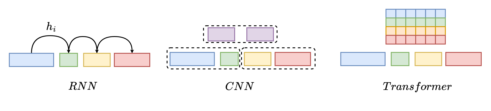
Transformer的特点就是使用自注意力直接混合所有信息，比RNN和CNN高效。
多头注意力
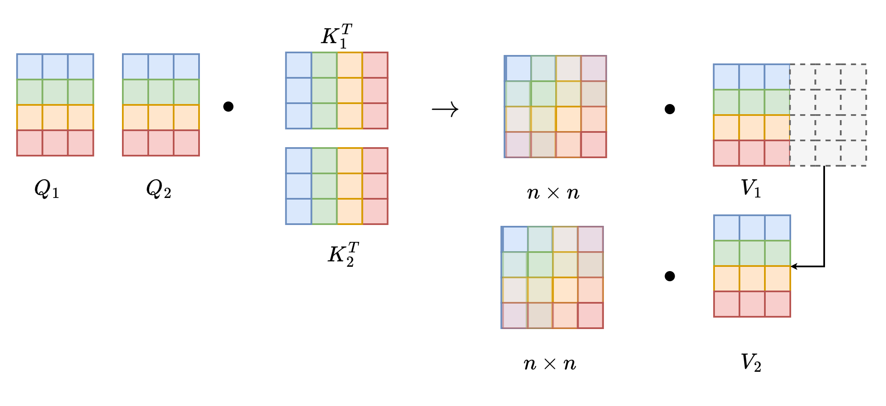
将Q/K/V拆分后并行计算，能生成多个注意力矩阵，能学习多种不同的信息匹配。
1.3.3 Encoder¶
前馈神经网络
-
经典Transformer使用两层全连接层，使用ReLU激活函数
\[ 512 \to 2048 \to 512 \]
归一化层
- 控制每个Token隐藏向量的数值尺度，使模型更稳定，易于训练。
-
经典Transformer使用Post-Norm
\[ y = \text{LayerNorm}(x + F(x)) \] -
大模型通常用Pre-Norm
\[ y = x+F(\text{LayerNorm}(x)) \] -
pre-norm通常让梯度可以顺畅沿残差路径传播
1.3.4 Decoder¶
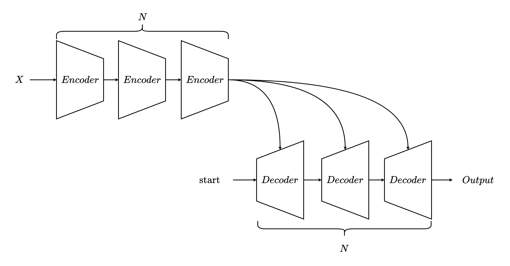
多层Encoder的最终输出作为所有Decoder的输入
经典Transformer最后的Linear层使用的矩阵参数和嵌入矩阵相同
1.3.5 训练与推理¶
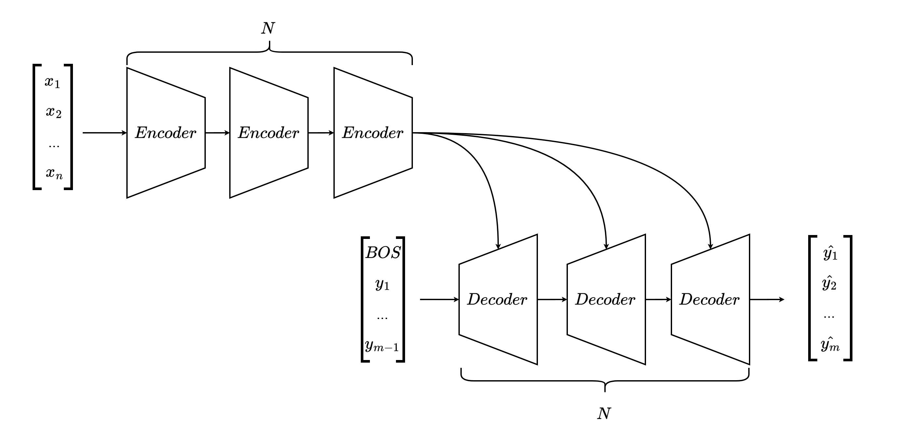
训练流程
- 训练时会将目标输出 \(BOS, y_1, \cdots, y_{m-1}\) 一次性作为Decoder是输入，然后使用因果掩码防止模型看未来信息。
- Decoder会一次性生成所有输出，输出为 \(P_{t}[y_i]\) ，即最后的概率估计中目标词 \(y_i\) 的概率。
-
计算损失
\[ L = -\sum_{i=1}^{m} \log P_{t}[y_i] \]
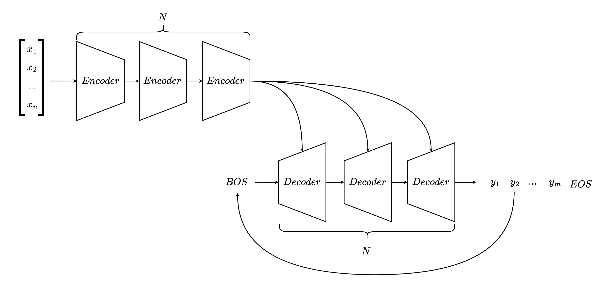
推理流程
经典应用¶
| 类别 | 代表模型 | 信息可见范围 | 最擅长 |
|---|---|---|---|
| Encoder-only | BERT | 左右双向 | 理解、分类、检索 |
| Decoder-only | GPT | 只能看前文 | 自回归生成、LLM |
| Encoder–Decoder | T5、BART | 输入双向、输出单向 | 翻译、摘要、转换 |
| Vision Transformer | ViT、Swin | 图像 Patch 之间 | 图像理解 |
| Detection Transformer | DETR | 图像与目标查询之间 | 目标检测 |
| Diffusion Transformer | DiT | 噪声潜变量 Patch 之间 | 图像和视频生成 |
2.生成式模型¶
2.1 VAE¶
(Variational Autoencoder, VAE)变分自编码器，是一种潜变量生成模型。它既能像普通自编码器一样重构输入，也能从一个简单的潜变量分布中采样，生成新的数据。
2.1.1 自编码器¶
数据降维，压缩，特征提取，去噪，异常检测
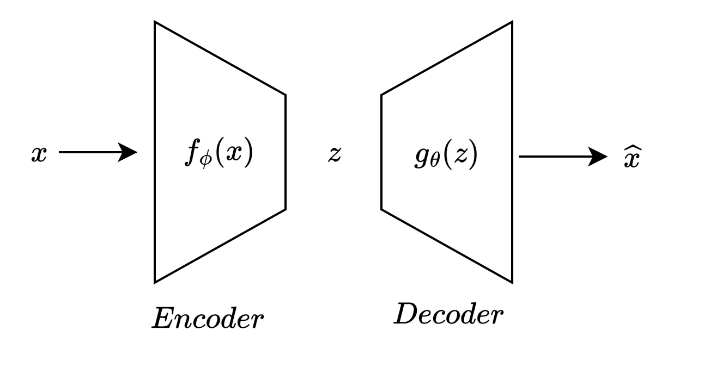
- \(f,g\) ：结构自由，可以是CNN，MLP，Transformer等，且两者可以完全不同
自编码器训练Encoder提取特征，然后使用Decoder尝试将特征重建为原始数据来检测特征是否有效。自编码其可以同时训练编码器和解码器。
实际上，为了避免Decoder过度猜测导致Encoder提取特征能力差，会限制Decoder容量、对z增加噪声等方式增加约束。
2.1.2 变分自编码器¶
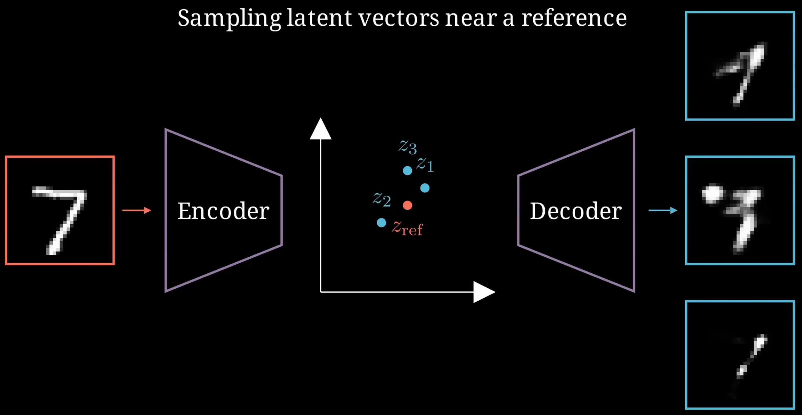
实践发现自编码器在使用新潜变量直接进行生成时效果很差，比如在已训练出的潜变量附近采样，并不能得到于对应训练数据相似的结果，这显示潜变量分布不连续。
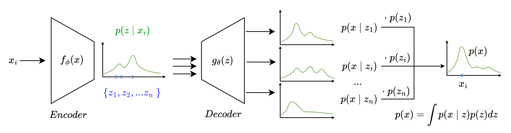
理想情况下，VAE中编码器不再只输出潜变量z，而是假设已知潜变量 \(z\) 先验分布 \(p(z)\) ，然后拟合条件概率 \(p(z|x)\) (实际是使用 \(q_{\phi}(z|x)\) 进行近似 ) 。 对每个 \(x_i\) ：获得 \(p(z|x_i)\) (也就是 \(q_{\phi}(z|x_i)\) ) 后，采样 \(z\) ，训练解码器拟合 \(p(x|z)\) ( 即 \(p_{\theta}(x|z)\) ) 。 最后求 \(p_{\theta}(x) = \int p_{\theta}(x|z)p(z)\,dz\)，优化 \(\theta 和 \phi\) 到 \(p_{\theta}(x_i)\) 最大。
理想情况
- 编码器拟合条件概率分布 \(p(z|x)\)，通过输入 \(x\) 获取潜变量或者特征的分布。
- 解码器从 \(p(z|x)\) 中采样 \(z\) ，训练解码器拟合 \(p(x|z)\)。
这里有几个问题： 1. \(p(z|x)\) 函数形态不明，拟合困难。 2. \(p(z)\) 先验分布未知，无法直接使用。 3. \(p(x|z)\) 需要进行大量采样，计算复杂度高，梯度信号弱。
基本假设
-
\(z\) 是标准正态分布
\[ p(z) = \mathcal{N}(0, I) \] -
\(q_{\phi}(z|x)\) 是高斯分布
\[ q_\phi(z|x) = \mathcal{N}(\mu_\phi(x), \text{diag}(\sigma_\phi^2(x))) \] -
不直接计算 \(p(x)\) ，而是优化ELBO(Evidence Lower Bound, 证据下界/边缘似然下界)
\[ \mathcal L_{\mathrm{ELBO}}(\theta,\phi;x) = \underbrace{\mathbb E_{q_\phi(z\mid x)}\!\left[\log p_\theta(x\mid z)\right]}_{\text{重建项}}\ - \underbrace{D_{\mathrm{KL}}\!\left(q_\phi(z\mid x)\Vert p(z)\right)}_{\text{正则项}} \] -
这里虽然每次训练只进行一次采样，但在多轮训练后也能模拟出蒙特卡洛采样的效果
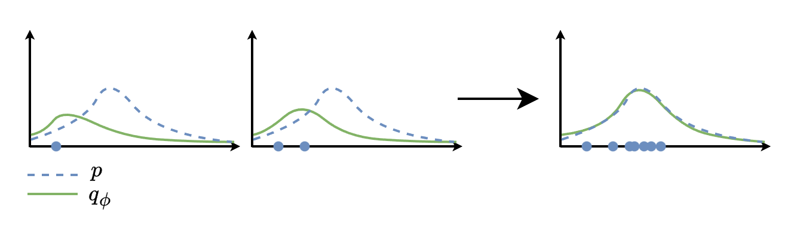
训练流程
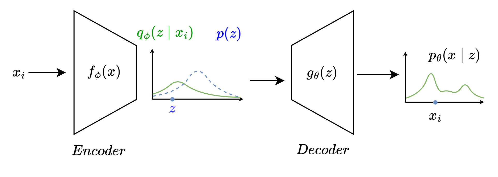
- 初始化后，输入 \(x_i\)
-
编码器输出 \(q_\phi(z|x_i)\) 参数 \(\mu_\phi(x_i), \log \sigma_\phi^2(x_i)\)
\[ q_\phi(z\mid x)=\mathcal N\left(z;\mu_\phi(x),\operatorname{diag}\bigl(\sigma_\phi^2(x)\bigr)\right) \] -
从 \(q_\phi(z|x_i)\) 中采样 \(z_j\)
\[ z = \mu_{\phi}(x_i) + \sigma_{\phi}(x_i) \odot \epsilon, \epsilon \sim \mathcal{N}(0, I) \] -
将 \(z_j\) 输入解码器，生成 \(p_\theta(x|z_j)\)，这里可以是高斯分布、伯努利分布等
\[ \mathbb E_{q_\phi(z\mid x)}\!\left[\log p_\theta(x\mid z)\right] \approx \log p_{\theta}(x_i | z_j) \] -
求ELBO并反向传播优化 \(\theta\) 和 \(\phi\)
\[ \mathcal L_{\mathrm{ELBO}}(\theta,\phi;x)\leq\log p_\theta(x) \]\[ \mathcal L_{\mathrm{ELBO}}(\theta,\phi;x)=\mathbb E_{q_\phi(z\mid x)}\!\left[\log p_\theta(x\mid z)\right]-D_{\mathrm{KL}}\!\left(q_\phi(z\mid x)\Vert p(z)\right) \]\[ \mathbb E_{q_\phi(z\mid x)}\!\left[\log p_\theta(x\mid z)\right] = \int q_\phi(z\mid x) \log p_\theta(x | z)\,dz \]
ELBO推导
重参数化
将随机采样改为 \(z = \mu + \sigma \epsilon, \epsilon \sim \mathcal{N}(0, I)\) ,使其可微。
2.2 GAN¶
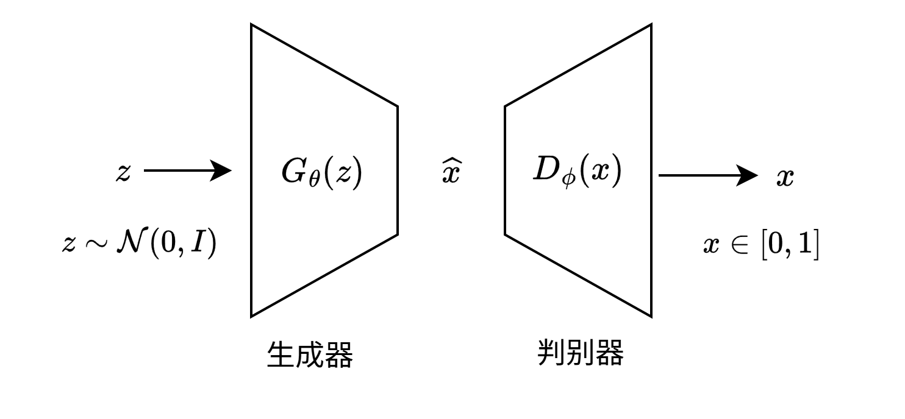
GAN由生成器和判别器构成，生成器和判别器结构自由，依据具体任务设计
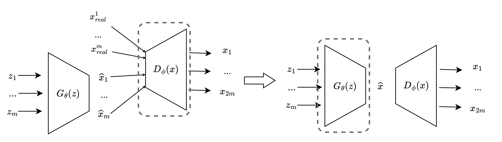
交替训练，先训练判别器，再训练生成器
训练
-
采集一批真实样本，一批由随机噪声生成的假样本，训练判别器（只更新判别器参数 \(\phi\)）
\[ L_D = - \frac{1}{m} \sum_{i=1}^m \log D_{\phi}(x_i) - \frac{1}{m} \sum_{i=1}^m \log (1 - D_{\phi}(G_{\theta}(z_i))) \] -
采集一批随机噪声，训练生成器（只更新生成器参数 \(\theta\)）
\[ L_G = \frac{1}{m} \sum_{i=1}^m \log D_{\phi}(G_{\theta}(z_i)) \]
2.3 diffusion¶
给离散的原始数据分布施加不同强度的噪声，将概率梯度铺满整个空间。训练神经网络拟合不同强度的高斯噪声施加后（即不同方差大小）的概率梯度场，形成一张随强度 \(t\) 动态变化的地图。推理时，从初始点出发，逐渐使用更高频率的地图，最终得到一个符合原始数据分布的样本。
Score Matching
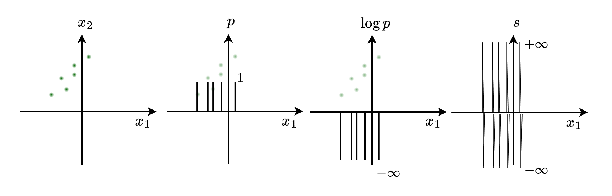
（1）在二维空间中的数据分布 （2）数据采样点概率分布（3）采样点概率分布对数（4）采样点概率分布对数的梯度
早期的 score matching 学习数据分布 \(p(x)\) 的梯度 \(s(x) = \nabla_x \log p(x)\)，但由于数据采样点是离散的，实际 \(p(x) = \delta(x)\) (狄拉克函数) ，采样点附近梯度为 \(\infty\) ，\(s(x)\) 极其不稳定。
Denoising Score Matching
给数据点 \(x_i\) 添加噪声 \(\epsilon, \epsilon \sim \mathcal{N}(0, I)\), 得到平滑分布
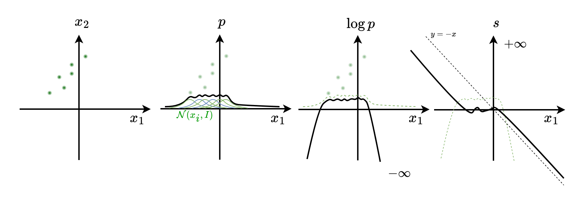
理论上在数据空间中的任意一点沿着 \(s(x)\) 方向移动，就能找到一个合适的数据
从某一起点出发，沿着 \(s(x)\) 方向移动，每次结果都停留在同一个概率高峰（ \(s(x) = 0\) ），Langevin Dynamics给移动增加噪声项来解决这个问题
Langevin Dynamics
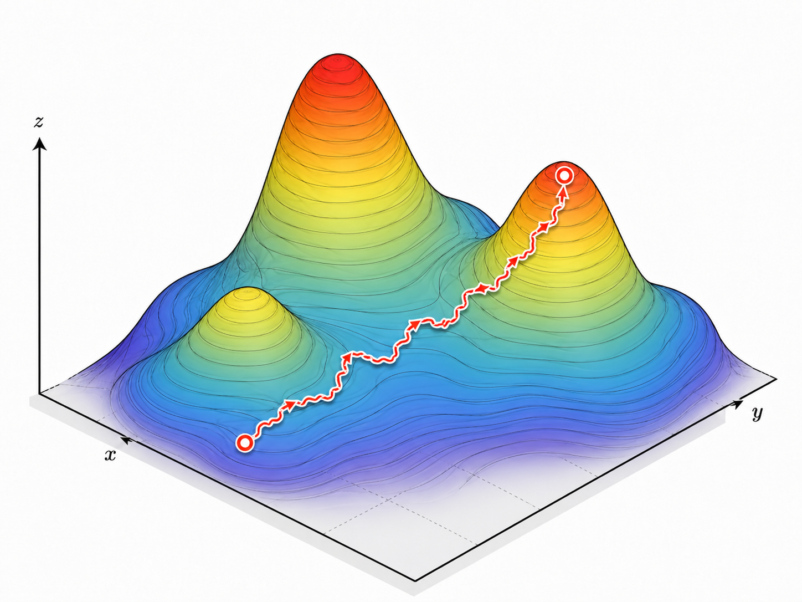
高斯分布性质
- 容易采样，高维表现好
- 多步噪声叠加仍保持高斯形式
不难发现，如果不断增加噪声，\(x_t\) 遵循的分布方差会越来越大，\(x_t\) 会越走越远，可能会脱离数据分布。 强噪声会损失数据细节，弱噪声会导致梯度不稳定，t较小时，距离数据较远的地方梯度过低；t较大时，数据分布频率较低，细节模糊。
diffusion
diffusion使用不同强度噪声的地图
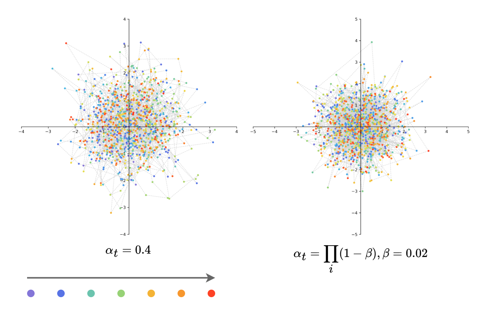
使用 \(\alpha_t = \prod (1-\beta_t)\) 可以让分布更接近高斯分布
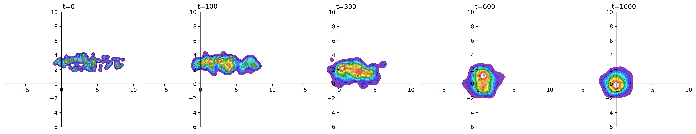
从t=0 到 t=1000，\(x_t\) 的概率分布变化：这里是将每个x看作标准高斯分布中心，然后求和归一化后得到的概率分布。这张图也对应了不同 t 的 \(p_t(x)\) 分布，也是训练数据的分布。
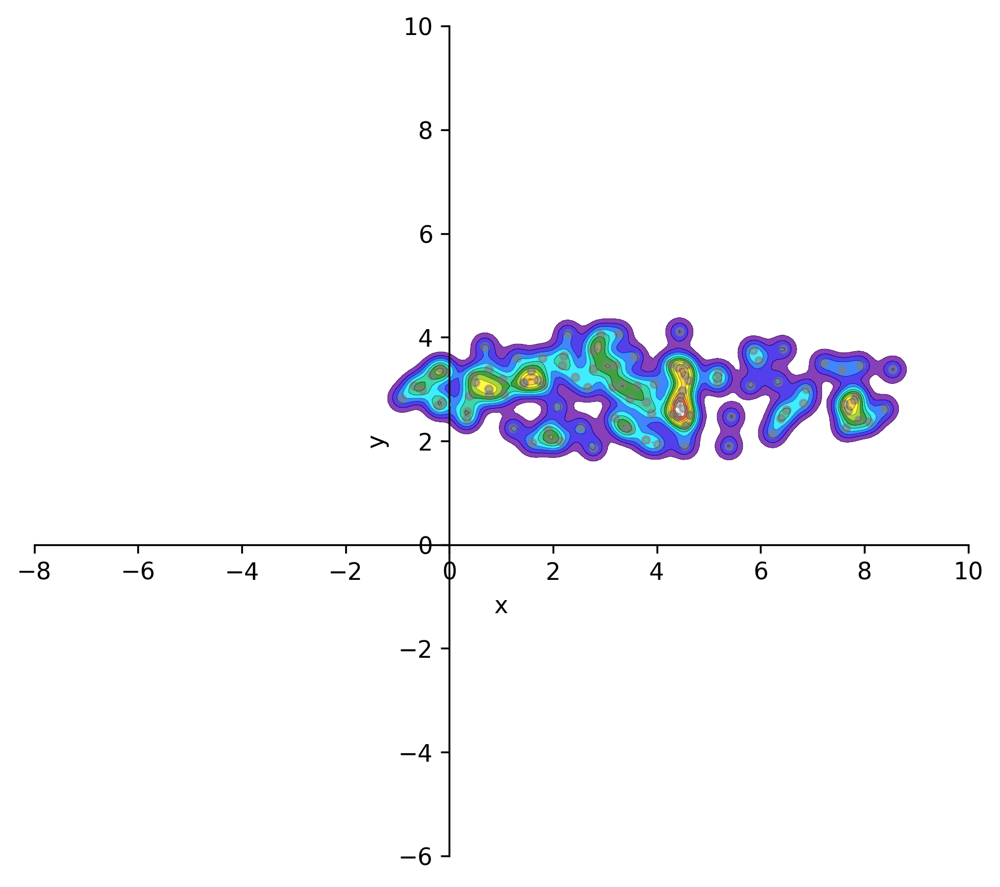
t = 0 的初始概率分布：其中的小圆点代表采样的训练数据，整体分布可以看作数据分布 \(p(x)\)
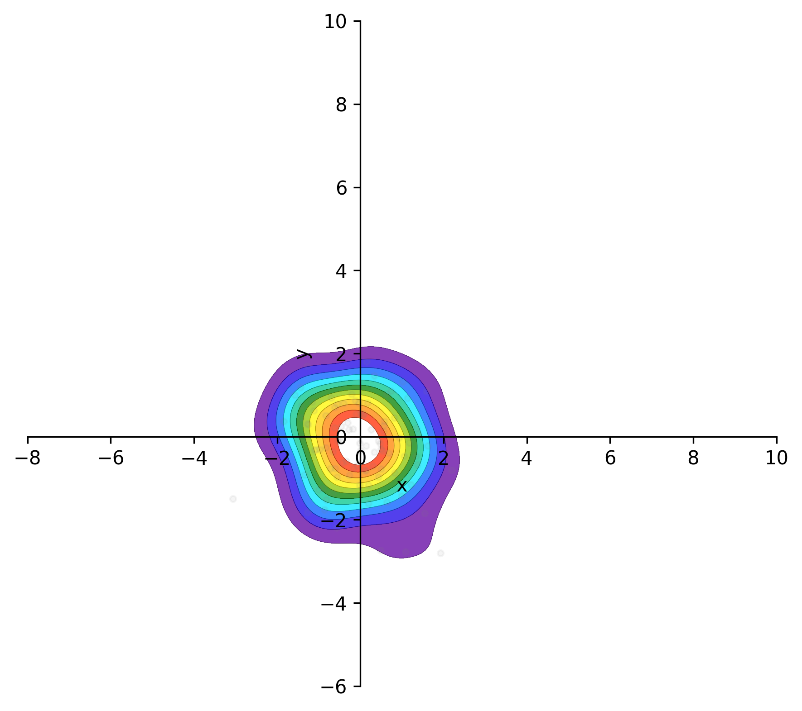
t= 1000 的概率分布：整体分布以及近似标准高斯分布，即退化为噪声
训练
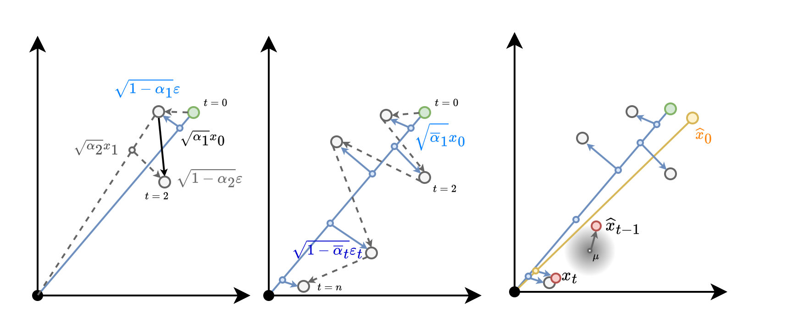
(a) 加噪过程 (b) 等效加噪 (c) 推理过程
- 加噪过程：图上对x_t加噪，就是先削弱信号，得到蓝色圆点 \(\sqrt{\alpha_1}x_0\) ，然后施加噪声 \(\sqrt{1-\alpha_1}\epsilon\)
- 等效加噪：经过t次操作得到的 \(x_t\) ， 可以写为 \(x_t = \sqrt{\bar{\alpha}_t}x_{t-1} + \sqrt{1-\bar{\alpha}_t}\epsilon_t\)
-
推理过程：给出噪声数据 \(x_t\) , 经过t轮去噪，就能得到生成数据了。
\[ \hat{x}_0 = \frac{x_t - \sqrt{1- \bar{\alpha}}_t \epsilon_{\theta}(x_t, t)}{\sqrt{\bar{\alpha}_t}} \]\[ \hat{x}_{t-1} = \frac{\sqrt{\bar{\alpha}_{t-1}}\beta_t}{1-\bar{\alpha}_t} x_0 + \frac{\sqrt{\bar{\alpha}_{t}}(1-\bar{\alpha}_{t-1})}{1-\bar{\alpha}_t}x_t + \beta_t z, z\sim \mathcal{N}(0,I) \]
每次计算 \(x_t = \sqrt{\alpha_t}x_{t-1} + \sqrt{1-\alpha_t}\epsilon_t\) 都会得到一个训练数据 \((x_t, t, \epsilon_t)\) ，这里的 \(\epsilon_t\) 指的是该数据点的噪声向量，与梯度的关系为
- \(s(x_t, t)\) = \(\nabla_{x} \log p_{t}(x)\)
- \(p_t(x)\) 通过以 \(\sqrt{\alpha_t} x_{t-1}^i\) 为中心的高斯分布求和得到
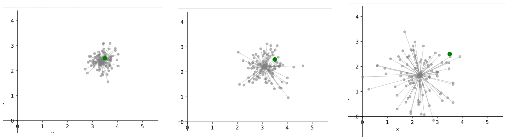
从 \(t=0\) 到 \(t=20\) 的训练数据，每个小圆点代表一个训练数据，每个 \(t\) 对应的数据点数量等于训练轮次（每轮训练都会有一条马尔可夫链，链上每一个路径点都对应一个训练数据）。数据点对应的连线就是该坐标的等效噪声向量。
只要训练轮次足够多，噪声向量就能铺满整个空间，神经网络就能拟合 不同 \(t\) 对应的噪声向量场。而噪声向量场可以转化成梯度向量场
损失函数：
推理
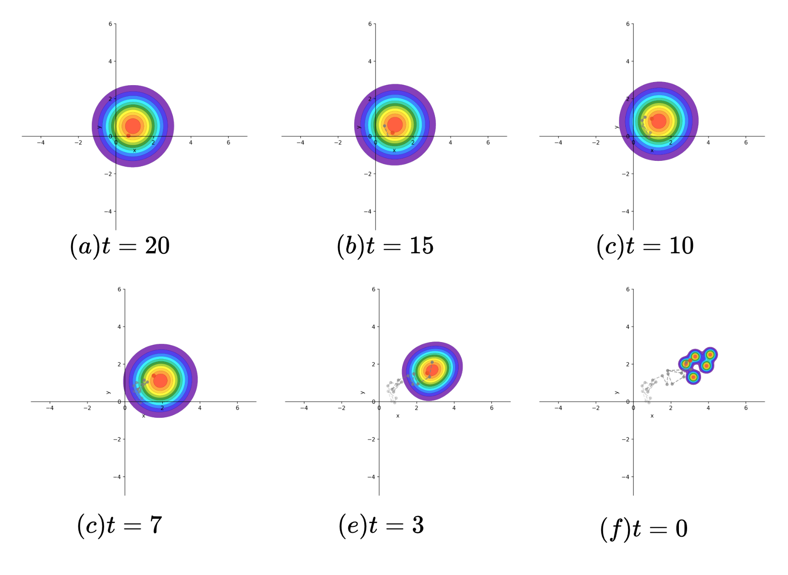
\(x_t\) 从 \(t=20\) 开始，沿着 \(p_t(x)\) 的梯度方向进行移动，知道最后输出 \(x_{0}\)
结尾
Diffusion会将图像像素颜色进行归一化到 \([-1, 1]\) 范围，然后进行加噪。传统噪声预测网络为U-Net，新方法则使用Diffusion Transformer。
3. 激活函数¶
Sigmoid
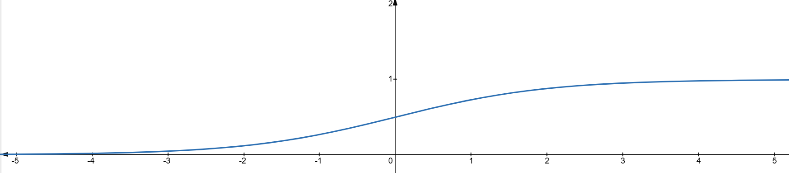
- 常用于概率或者门控强度
- 连续，平滑，可导
- 缺点：
- x绝对值较大时易饱和
- 输出不以0为中心
- 容易梯度消失
Tanh
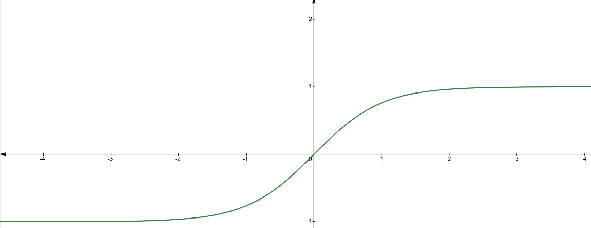
- 连续，平滑，可导
- 以0为中心，适合作为隐藏层
- 缺点：
- 梯度消失和饱和
ReLU
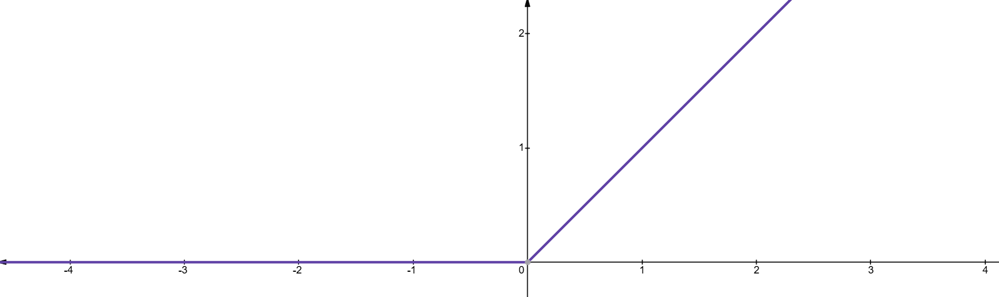
- 计算简单
- 适合稀疏激活
- 可以缓解梯度消失
- 缺点：
- 负半轴梯度为0，可能导致神经元死亡
- 不光滑
Leaky ReLU
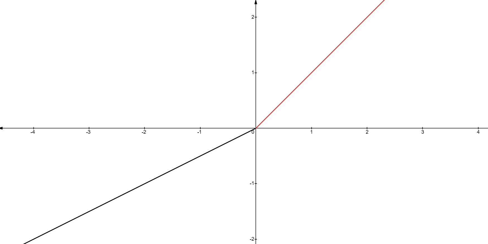
Softmax
- 输出是一个离散概率分布
- 用于多分类任务
4. 优化器¶
| 优化器 | 核心思想 | 主要优点 | 主要缺点 | 常见场景 |
|---|---|---|---|---|
| SGD | 直接沿负梯度方向更新 | 简单、状态内存极低；调好后泛化通常不错 | 对学习率敏感；收敛可能较慢、容易震荡 | 基础实验、小模型；通常不会单独使用，而是配合动量 (PyTorch Docs) |
| SGD + Momentum | 累积梯度的指数移动平均，形成“惯性” | 抑制震荡、加速稳定方向；成熟可靠 | 仍需认真调整学习率和调度器 | CNN、图像分类、传统监督学习的经典选择 (PyTorch Docs) |
| Nesterov Momentum | 在“预计到达的位置”计算修正梯度 | 相比普通 Momentum 更有前瞻性 | 实际优势依赖任务，仍需调参 | 常作为 SGD 的 nesterov=True 选项 |
| Adagrad | 每个参数累计历史梯度平方，分别缩放学习率 | 对稀疏特征和低频参数友好 | 累积量只增不减，学习率可能过早衰减到接近零 | 稀疏特征、推荐系统、传统 NLP；现代大模型中较少单独使用 (PyTorch Docs) |
| RMSprop | 用梯度平方的指数移动平均替代永久累积 | 避免 Adagrad 学习率持续衰减；适应非平稳梯度 | 超参数和实现细节较多；现代 Transformer 中通常让位于 AdamW | RNN、强化学习及部分旧式网络 (PyTorch Docs) |
| Adam | 同时估计梯度的一阶矩和二阶矩，为每个参数设置自适应步长 | 收敛快、初始调参相对容易，是很强的通用基线 | 保存两份矩估计，状态内存较大；传统 (L_2) 正则与自适应缩放相互耦合 | 快速原型、强化学习、无明显权重衰减需求的任务 (PyTorch Docs) |
| AdamW | 在 Adam 基础上将 weight decay 与梯度更新解耦 | 正则化含义更清晰；训练 Transformer 稳定，生态成熟 | 状态内存仍约为两份参数量；学习率、衰减率和调度器仍需设置 | Transformer、LLM、Diffusion、ViT 的主流默认选择 (PyTorch Docs) |
| Adafactor | 对矩阵参数的二阶矩做行列分解，避免保存完整二阶矩矩阵 | 显著减少优化器状态；适合超大模型 | 更新规则和学习率设置更特殊，调参经验不如 AdamW 通用 | 内存受限的 Transformer、语言模型训练 (arXiv) |
| Lion | 只维护动量，并用动量的符号决定更新方向 | 比 Adam 少保存一份二阶矩状态；算法简单 | 学习率通常需比 AdamW 小；并非所有任务都优于 AdamW | 大批量视觉模型、部分语言模型预训练和微调 (arXiv) |
| LARS / LAMB | 按层比较参数范数与更新范数，进行层级学习率缩放；LARS 基于 Momentum，LAMB 基于 Adam | 支持极大 batch 的分布式训练 | 算法和调参更复杂；普通 batch 下未必优于通用优化器 | LARS 常见于大批量 CNN，LAMB 常见于大批量 BERT/Transformer 训练 (arXiv) |
| Muon | 对二维权重矩阵的动量更新进行矩阵正交化，使不同奇异方向的更新尺度更均衡 | 在部分 LLM 预训练实验中表现出较高计算效率；已进入 PyTorch | 属于较新的方法；主要处理二维隐藏层参数，偏置、嵌入等通常仍交给 AdamW | 新一代 LLM 预训练实验，尚未完全取代 AdamW (PyTorch Docs) |
其中实践中通常以 AdamW 为默认基线，其他优化器只有在泛化、显存或超大规模训练存在明确需求时再替换。
5. 基础概念¶
LayerNorm/BatchNorm
LayerNorm/BatchNorm（层归一化/批量归一化）
-
计算均值
\[ \mu = \frac{1}{n} \sum\limits_i^n x_i \] -
计算标准差
\[ \sigma = \sqrt{ \frac{1}{n} \sum\limits_i^n (x_i - \mu)^2 } \] -
\(\epsilon\) 是一个很小的常量，用于避免除0错误
-
归一化
\[ x_i = \frac{x_i - \mu}{\sqrt{\sigma^2 + \epsilon}} \] -
可学习平移缩放
\[ x_i = \gamma x_i + \beta \]
SFT
Supervised Fine-Tuning（监督微调）
- 最大化正确回答问题的概率，主要解决指令遵循、回答格式和基础任务的能力
RLHF
Reinforcement Learning with Human Feedback（基于人类反馈的强化学习）
- 对同一个问题x，有两种回答A和B
- 人工标记 \(A > B\)
- 训练奖励模型 \(r_{\phi}(x,y)\)， 使得 \(r_{\phi}(x,A) > r_{\phi}(x,B)\)。
DPO
Direct Preference Optimization（直接偏好优化）
- 训练模型提高较好回答相对于较坏回答的概率。
- \(p_{\theta}(y_w|x) > p_{\theta}(y_l|x)\)，其中 \(y_w\) 是较好回答，\(y_l\) 是较坏回答。
LoRA
Low-Rank Adaptation（低秩微调）
- 普通全参数微调会修改整个权重矩阵
-
LoRA冻结原参数W，只学习一个低秩增量 \(\Delta W\)
\[ W_{new} = W + \Delta W \]\[ \Delta W = BA \]
Benchmark
Benchmark（基准测试）
- 数据集 + 任务 + 评估指标
logits
logits（未归一化输出）
- 模型在Softmax之前输出的原始分数
量化
| 量化对象 | 含义 |
|---|---|
| 权重量化 | 将模型参数变成 INT8、INT4 等，主要降低模型大小和显存占用 |
| 激活量化 | 将网络中间结果量化，进一步降低推理显存和计算成本 |
| 权重＋激活量化 | 如 W8A8：权重 8 bit，激活 8 bit |
| KV Cache 量化 | 压缩 Transformer 推理时的键值缓存，适合长上下文 |
| 梯度量化 | 压缩训练或分布式通信中的梯度，主要用于训练阶段 |
- 训练后量化 PTQ
- 不重新完整训练，成本低，但低比特时可能损失精度。常见于部署已有模型。
- 量化感知训练 QAT
- 模型会主动适应低精度表示，通常精度保持得更好，但训练成本更高。。
蒸馏
复杂函数在受限函数空间中的最佳近似
- 标准知识蒸馏
- \(\tau\) : 温度系数
- \(p_T^{(\tau)}(y|x)\) : 教师模型输出的软概率
- \(p_S^{(\tau)}(y|x)\) : 学生模型输出的软概率
- \(CE\) : 交叉熵损失
- \(D_{KL}\) : KL散度损失
- \(y\) : 真实分布
- \(z\) : 模型输出的logits